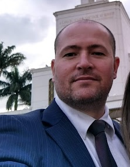

Andre Nogueira Borges | WDD130
Nickname: "Borges", "Careca"
My Name is André. I have few nicknames, but most people call me by my last name, Borges!
I've been a member of the church since 1995, when I was 15. I served a mission in Rio de Janeiro, Brazil for 2 years, got married in 2003, served as bishop for 6 years, and now I serve as member of stake high concil and Young men stake President.
I have the most beautiful wife and children there is. My oldest son is 18 years old and is going to serve a mission in Chile. My oldest daugther is 17 and is a talented Pianist, and my youngest daugther is 15 and she loves to sing and has a beautiful voice
As a brazilian, I love playing soccer, Jiu-jitsu and voleyball, but I also enjoy reading and listening to music.